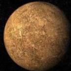
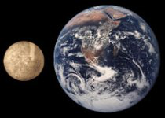
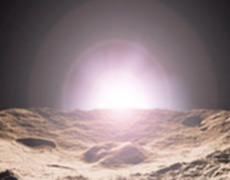
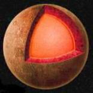
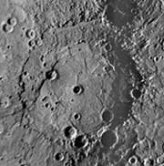

Планета Меркурий
В Древнем Риме Меркурий считался богом торговли, причём вполне обоснованно. В те далёкие времена, коммерсанты большую часть своей жизни проводили вдали от родных стен и берегов. Торговые пути отличались значительной протяжённостью, и человека, посвятившего себя подобной деятельности, родные видели очень редко. Именно поэтому, далёкой звезде, которую можно было разглядеть у линии горизонта только от случая к случаю, и присвоили именно этот почётный титул.

В наши дни Меркурий считается не богом, а первой планетой Солнечной системы. Ещё совсем недавно, по своим размерам, она занимала предпоследнее месте среди девяти планет, вращающихся вокруг Солнца. Но, как известно, ничто не вечно под Луной. В 2006 году, далёкий Плутон, в силу своих отнюдь не богатырских габаритов, потерял почётный статус планеты. Его переименовали в карликовую планету, а Меркурий оказался в самом конце дружного ряда космических тел, нарезающих бессчетные круги вокруг жёлтой звезды.
Но это что касается размеров. Зато по отношению к светилу Меркурий ближе всех. Он отстоит от Солнца на расстоянии всего в 57,91 млн. километров. Данная величина является средней. Малыш вращается по очень вытянутой орбите (её длина равна 360 млн. километров), поэтому то отдаляется от пышущей жаром звезды, то приближается к ней.
В перигелии (самая ближайшая точка орбиты по отношению к Солнцу) маленькая планета приближается к огромному раскалённому газовому шару на расстояние в 45,9 млн. километров. Зато в афелии (самая дальняя точка орбиты по отношению к Солнцу) космическая бездна до жёлтой звезды значительно увеличивается и становится равной 69,82 млн. километров.
Что же касается Земли, то здесь масштабы несколько другие. Меркурий то сближается с голубой планетой до 82 млн. километров, то расходится до 217 млн. километров. Наименьшая цифра вовсе не означает, что такого близкого земного соседа можно долго и тщательно рассматривать в телескоп.
Дело осложняется тем, что планета Меркурий отклоняется от Солнца на угловое расстояние всего в 28°. К тому же, орбита её вращения наклонена к плоскости эклиптики (мнимая плоскость, совпадающая с плоскостью орбиты Земли) на целых 7°.
Всё это приводит к тому, что данное небесное тело доступно для наблюдателя с Земли, только, сразу после заката или перед рассветом. Причём найти его можно почти у самой линии горизонта, да ещё лицезреть не весь далёкий диск, а лишь его половину, так как угол освещения Солнцем относительно голубой планеты равен примерно 90°.
По своей орбите Меркурий несётся со средней скоростью 48 км/с, а полный оборот вокруг светила делает за 88 земных суток. Эксцентриситет орбиты (величина, показывающая, насколько орбита отличается от окружности) равен 0,205, а разбег между плоскостью экватора и плоскостью орбиты составляет угол в 3°. Последняя величина говорит о том, что на планете Меркурий сезонные изменения очень незначительные.
Данное космическое тело относится к планетам земной группы. В неё входят, кроме Меркурия, Земля, Марс, Венера. У всей этой дружной компании очень высокая плотность. У нашего малыша она равна 5,49 г/см³.
Размеры же у него действительно подкачали. Планета Меркурий имеет диаметр всего в 4880 километров. Стыдно сказать, но по данному параметру его обошли не только другие планеты, но даже некоторые их спутники.
Самый крупный спутник Солнечной системы Ганимед, вращающийся вокруг Юпитера, имеет диаметр в 5262 километра. Не менее солидно выглядит и спутник Сатурна Титан. Здесь данная величина равна 5150 километров. Зато спутник Юпитера Каллисто уже уступает нашему герою. Его диаметр соответствует 4820 километрам. Самый же популярный в космической бездне спутник Луна имеет диаметр всего в 3474 километра. А вот карликовая планета Плутон вообще плетётся в хвосте. Её диаметр составляет лишь 2390 километров.

Планета Меркурий
и Земля
Так что не такой уж Меркурий невзрачный и непрезентабельный – ведь всё познаётся в сравнении. К тому же, как говорится, мал золотник да дорог.
Маленькая планета здорово проигрывает по своим габаритам матушке-земле и выглядит, как хрупкое создание, рядом с почтенной и представительной обитательницей космических просторов. Масса Меркурия в 18 раз меньше земной, а объём соответственно в 17,8 раз. Площадь его поверхности отстаёт от площади поверхности голубой планеты в 6,8 раз.
Особенности орбиты планеты Меркурий
Как уже упоминалось, Меркурий делает полный оборот вокруг Солнца за 88 земных суток. А вот вокруг своей оси малыш вращается со скоростью, равной 59 земным суткам. Его средняя скорость движения по орбите – 48 км/с. Но это, именно, средняя скорость. На одних участках орбиты планета движется быстрее, на других медленнее.
Максимально малыш разгоняется в перигелии. Здесь его скорость достигает 59 км/с. Меркурий старается проскочить этот, самый близкий к светилу участок, как можно быстрее. Зато в афелии он сама неторопливость. Здесь скорость планеты подает до минимума и равна всего 39 км/с. А вот скорость вращения вокруг оси – на всём протяжении орбиты величина постоянная.
Взаимодействие скорости движения по орбите со скоростью вращения вокруг оси даёт поразительный эффект. Любой участок местности на планете находится в одном и том же положении по отношению к звёздному небу в течении 59 дней. А вот к Солнцу данная местность возвращается, только, через 176 дней или через два меркурианских года. Таким образом солнечные сутки (отрезок времени от одного положения Солнца в зените до другого) на Меркурии равны 176 земным суткам.
Интересный эффект наблюдается в перигелии. На этом участке космического пути скорость движения Меркурия по орбите становится больше скорости вращения вокруг оси. В связи с этим, на повёрнутых к светилу долготах возникает так называемый эффект Иисуса Навина (предводитель еврейского народа, по преданию остановил движение Солнца).

Восход на планете
Меркурий
Солнце останавливается, как бы задумавшись, а затем начинает двигаться в обратную сторону. Оно неуклонно стремится на восток, напрочь игнорируя предначертанное ему силами Космоса западное направление. Такая вольность продолжается семь земных суток, пока планета Меркурий не проходит ближайший к жёлтой звезде участок орбиты.
Затем орбитальная скорость маленького космического тела начинает падать, а движение светила замедляться. В точке, где скорость вращения уравнивается с орбитальной скоростью, Солнце останавливается. Проходит немного времени, и оно меняет направление движения на противоположное, то есть двигается уже как и положено – с востока на запад.
Что же касается долгот, «отстоящих» от залитой солнечным светом местности на 90° к востоку, то здесь картина ещё более удивительная. Если бы в этих краях оказались земные наблюдатели, то они стали бы очевидцами двух восходов и двух закатов.
Вначале Солнце, как ему и предначертано, взошло бы на востоке и устремилось к зениту. В какой-то момент времени светило прекратило бы своё движение и остановилось. Затем начало бы неуклонный ход назад и исчезло за линией горизонта. По прошествию семи земных суток оно бы опять засияло на востоке и уже без помех проделало бы свой путь к высшей точке на меркурианском небе.
О таких поразительных особенностях орбиты Меркурия стало известно только в 60-е годы XX столетия. До этого исследователи считали, что первая планета Солнечной системы повёрнута к светилу всегда одной и той же стороной, а вокруг собственной оси вращается с той же скоростью, что и обращается вокруг Солнца. Истинное положение вещей стало достоянием людей только после того, как планету исследовали при помощи методов радиолокации.
Строение планеты Меркурий
О строении планеты Меркурий люди знали очень мало до первой половины 70-х годов прошлого века. В последних числах марта 1974 года, всего в 703 километрах от поверхности одного из ближайших соседей Земли, пролетела американская автоматическая межпланетная станция «Маринер-10». Она повторила свой манёвр в сентябре 1974 года. В этот раз её расстояние до планеты составляло всего 48 тысяч километров. Очередной виток станция сделала в марте 1975 года, находясь от Меркурия в 327 километрах.

Строение
Меркурия
Примечательным здесь является то, что космическая аппаратура зафиксировала магнитное поле. Оно вовсе не представляло из себя мощное силовое образование, но в сравнении с Венерой выглядело очень значительно. Марс также остался на вторых ролях со своей неустойчивой магнитной структурой.
Магнитное поле планеты Меркурий в сто раз уступает по величине земному, его магнитная ось не совпадает с осью вращения на 2°. Наличие же этого образования говорит о том, что у данного космического объекта присутствует ядро, в котором это самое поле и создаётся.
На сегодняшний день существует следующая схема устройства первой планеты Солнечной системы. Она имеет горячее железно-никелевое ядро и окружающую его силикатную оболочку. Температура ядра составляет порядка 730° по Цельсию, плотность равна 9,8 г/см³. Ядро большое. Оно содержит в себе 70% массы планеты, а его диаметр равен 3600 километров. Соответственно толщина силикатного слоя колеблется в пределах 650 километров.
Поверхность планеты Меркурий
Поверхность планеты Меркурий усеяна кратерами. На некоторых участках эти образования располагаются очень густо, на других же их совсем немного. Самый крупный кратер имеет в диаметре 625 километров и носит название Бетховен.
Предполагается, что равнинная местность моложе по возрасту, нежели усеянная многочисленными воронками. Она образовалась в результате выбросов лавы, которая накрыла собой ударные кратеры и сделала ландшафт ровным.

Поверхность
планеты Меркурий
На Меркурии присутствует величайшее образование, именуемое Равниной Жары. Это огромный древний кратер с диаметром 1300 километров. Он окружён гористым кольцом, внутри же поверхность сглаженная, без видимых выступов. Видимо многочисленные извержения лавы залили эту огромную рану в теле планеты и сделали её практически незаметной для стороннего наблюдателя.
С оборотной стороны многострадального космического тела, как раз напротив Равнины Жары, наблюдается большое количество возвышенностей, перемежающихся с длинными извилистыми низменностями. Возвышенности достигают в высоту два километра, низины же узкие и как бы зажаты между нависающими над ними величественными холмами.
Видимо, в своё время, гигантский астероид, впечатавшийся в Меркурий, спровоцировал сдвиг недр планеты. В одном месте он пробуравил огромную вмятину, а на противоположной стороне кора вздыбилась, образовав глубокие разломы и значительные смещения горных пород.
Нечто подобное наблюдается и на других участках поверхности. Только данные образования имеют совсем иную геологическую историю. По своей форме они напоминают клиноподобные выступы. Ширина их доходит до десятков километров. Создаётся впечатление, что это выдавленная из глубинных недр под огромным давлением горная порода.
Существует вполне серьёзная обоснованная теория, что данные геологические творения возникли в то время, когда пошли процессы уменьшения температурных режимов Меркурия. Ядро планеты, охлаждаясь, начало сжиматься. Это привело к тому, что верхний твёрдый слой также стал уменьшать свою площадь. Всё это спровоцировало сдвиги коры, следствием которых, в конце концов, и стал столь своеобразный ландшафт на поверхности.
В наши дни температурные режимы на поверхности Меркурия также имеют свою определённую специфику. Учитывая то, что рассматриваемое космическое тело расположено очень близко от жёлтой звезды, можно без труда сделать вывод: обращённая к Солнцу поверхность имеет очень высокую температуру.
Её максимум (в перигелии) достигает 430° по Цельсию. В афелии попрохладнее. Здесь температура доходит только до 290° по Цельсию. На остальных участках длинной орбиты, средние температурные величины колеблются в пределах 320-340° по Цельсию.
Как нетрудно догадаться, ночью обстановка совсем иная. Температура в это время меркурианских суток держится на отметке в минус 180° по Цельсию. То есть получается, что одна половина планеты «изнывает» от ужасной жары, а другая, в это же самое время, «страдает» от страшного холода.
Довольно неожиданно звучит утверждение, что, не смотря на высокие температурные режимы, планета Меркурий обладает запасами водяного льда. Найти его можно в полярных точках и на дне глубоких кратеров. В эти места не попадают всепроникающие солнечные лучи, а потому ледяная масса «чувствует себя» вполне комфортно.
Откуда же берётся вода на планете Меркурий? К тому же, в атмосфере её содержится немало – целых три с половиной процента. Ответ лежит, можно сказать, на поверхности. Воду на данное космическое тело доставляют кометы. Некоторые из них, подлетая к Солнцу, сталкиваются с малышом и навсегда остаются в его горячих объятиях.
Лёд, из которых состоят подобные образования, тает, превращается в воду, а та, в свою очередь, испаряется в атмосферу. Она начинает путешествовать по планете в виде паров, а в холодное время суток оседает на поверхность и опять превращается в лёд. Оказавшись на дне кратеров или на полюсах, вода замерзает и уже никогда не возвращается в газообразное состояние. Она навечно остаётся скованной страшным холодом ледяной массой.
Раз на планете наблюдаются большие перепады температур, то легко сделать вывод: у рассматриваемого космического тела атмосфера отсутствует. Если быть совсем точным: газовая подушка в наличии имеется, но она очень разреженная. Давление её ничтожно и составляет миллиардные доли атмосферного давления Земли.
Основной химический элемент атмосферы Меркурия – это гелий. Заносит его на планету солнечный ветер (поток плазмы, истекающий из солнечной короны). Главные его составляющие: гелий и водород. Так что последний также присутствует в атмосфере, но в гораздо меньшем процентном соотношении.
Исследования планеты Меркурий
Хоть планета Меркурий и находится совсем недалеко от Земли и известна с древнейших времён, её изучение представляет довольно сложную задачу. В этом, естественно, виноваты особенности орбиты маленького космического объекта. Малыша очень трудно увидеть, а тем более тщательно рассмотреть в ночном небе.
Полное представление о планете можно получить, только, наблюдая её с близкого расстояния. Такая возможность появилась у людей в 1974 году, когда вблизи Меркурия оказалась американская автоматическая межпланетная станция «Маринер-10». Именно благодаря снимкам, которые она сделала, была составлена подробная карта почти половины поверхности второй планеты.
Затем наступил более чем 30-летний перерыв, прежде чем очередная американская автоматическая межпланетная станция «Мессенджер» почтила Меркурий своим вниманием. Она появилась в его небе в середине января 2008 года. После этого ей было осуществлено ещё два облёта маленькой планеты в первой декаде октября 2008 года и 30 сентября 2009 года.
На меркурианскую орбиту станция вышла 17 марта 2011 года. Её наименьшая высота составила 200 километров. Были исследованы ландшафт планеты, её атмосфера. В 2015 году «Мессенджер» упал на Меркурий и образовал кратер с диаметром 15 метров.
Такие сложные манипуляции с выходом на постоянную орбиту объясняются невозможностью прямого перелёта к Меркурию. Связано это с тем, что межпланетной станции необходимо погасить орбитальную скорость Земли. Осуществляется подобное посредством различных гравитационных маневров, позволяющих придать космическому аппарату соответствующее ускорение.
Не захотели отставать от американцев в изучении Меркурия и японцы с европейцами. Они организовали совместную миссию на маленькую планету в 2013 году, создав для этого два космических аппарата: «Меркурий Планета Орбита» и «Меркурий Магнитосфера Орбита». Первый из них занялся изучением поверхности, а второй тщательным ознакомлением с магнитным полем и магнитосферой данного объекта.
Дальнейшие фундаментальные научные исследования планеты Меркурий ещё впереди. Какие малыш преподнесёт сюрпризы – неизвестно, но никто не сомневается, что они несомненно будут. Ведь Космос так непредсказуем, а его обитатели скрытны, загадочны и обладают поразительной способностью надёжно хранить свои тайны.
Статью написал ridar-shakin
Источники: Издание «Планеты Солнечной системы»